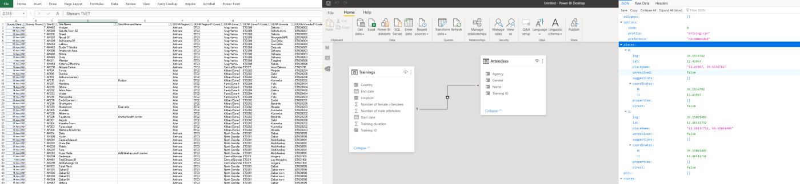
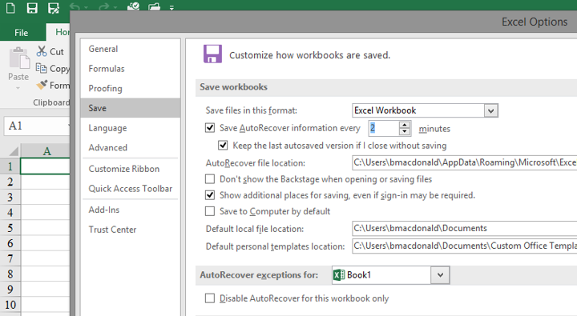

Data Literacy¶
The purpose of this chapter is to introduce the reader to the concept of data, what it is, how it used in humanitarian response and its relevance in the role of information management. This chapter forms an important basis for subsequent chapters as it aims to clearly describe key concepts around data to ensure their clear and shared understanding. This shared vocabulary is vital for the collaboration needed at the various stages of the data’s lifecycle. This chapter is primarily aimed at IM’s but is also relevant to any humanitarian involved to any degree in evidence-based decision making.1
{kind=link}
Fig. 2 A shared understanding of terms is important for engagement around data¶
What is data?¶
Data is the physical representation of information in a manner suitable for communication, interpretation, or processing by human beings or by automatic means.2 It can be structured or unstructured, can come in many different forms (human-readable or machine-readable) and can come from any number of sources, using any number of methods. While the terms data, information and knowledge are quite often used interchangeably it is helpful to think of information as data integrated into context, and knowledge as a collection of information, processed in a way that provides learning.
What does it look like?¶
Data is all around us but is usually messy and unstructured. Processing this information into a structure that can provide sense is at the core of IM. This ‘sense-making’ can use different approaches - an experienced camp manager may decide to walk into a new camp, walk around it observing it, deciding on what actions they need to prioritize. Another may prefer to set up a list of indicators to measure specific needs in the camp. The approaches are different (and quite often complimentary) but the goal and process are to a large extent the same.
To get from messy data to structured that that can be used - by itself, or more commonly in conjunction with other datasets - a degree of organizing, tagging or categorizing must take place. If a survey is used, those categories are determined by the questions asked the type of questions and the response options. When setting these categories it is very important that each person involved with the data - from the person giving the response, the enumerator right up to those whose programmatic decisions it informs - has a clear and common understanding of what and how a concept is captured in these categories.
Formats¶
Valuable humanitarian data can often start out as paper survey responses, hand written notes (ie. distribution details) or as handwritten notes (such as from Focus Group Discussions). To aid the cleaning, processing and management of this data, digitization may be required. Digital data can be stored in a number of the following formats and is closely linked to the tools used to gather and/or store the data:
Tabular data: By far the most common format for humanitarian data, Excel or Comma Separated Value (CSV) files show data as a table where each column represent as variable in your data and each row ideally represents an observation. 3
Relational databases: Data cant always be represented in a single table. Quite often there is a need to present the data across multiple tables, showing the linkages(relationships) between variables in different table. Relational databases provide an underlying data model for most modern websites and software. An example use for a relational database could be in the recording of trainings, where one table contains rows, each representing a single training while a second table contains the list of participants. The relationships between these two tables could be defined as each training can contain multiple participants and each participant can attend multiple trainings
APIs To aid the access and transfer of data, it is very common for modern software systems to have an API, in which other websites (or data analysis tools) can request data from the underlying data store. The most common file format for these is called JSON, a semi-human readable format with the advantage over tabular formats in that is can represent messy semi-structured data or complex relationships that would otherwise require a database. 4
Spatial: Spatial data formats such as .shp, .gpg, .geojson .geotiff or .dem are used to store 2d or 3d spatial data. Most of these formats can display or export to tabular formats.
{kind=link}

Fig. 3 Examples of data as tables, a relational database, and as JSON from an travel distance API¶
Sources¶
CODs
HDX
Internal systems
Others
Non traditional sources
Key data concepts¶
measures
indicators
scales
standards
primary vs secondary data
IM tips¶
The following tips are a collection of commonly encountered issues in humanitarian IM and how to avoid them. The tips are a shortened from their usual form to avoid overlap with other chapters where many of the isssues areexpanded in more detail.5
1. Use Excel for numerical data¶
Don’t use software such as Word for gathering and analysing numerical data. Likewise, be careful not to use Excel to over visualise how your data is represented. Simple, well structured data is best for analysis and sharing with others.
{kind=link}
Fig. 4 Tatsuo Horiuchi uses Excel to paint beautiful Japanese lanscapes. Don’t follow Tatsuo¶
2. Save often, use versioning, and name files sensibly¶
You don’t want to work all day on an analysis to suddenly find that the fil crashed before you had a chance to save it. In Excel, there is an option to have your files autosave at a specified interval.
If saving to OneDrive or Sharepoint, you will see a small downward arrow which allows youto view the file’s Version History. to view or roll back to previous version of a document. Alternatively you can save multiple versions of the file following certain milestones or use a software versioning software such as Git.
Try have you and your team use a consistent, welll understood naming convention for files. The format I use is as follows: [year][month(2digists)][date]-[initials]-[version]. For example 20182307-IMtips-BMD-v1.xlsx
{kind=link}

Fig. 5 Click File > Options to get Excel to save more regularly¶
3. Backup your data¶
What if your computer crashes or is stolen?
What if you need to collaborate on a file?
Make use of Onedrive/Sharepoint. Onedrive is ideal for working documents (you can right-click on a file and share it collaboratively).
4. Check for existing data, communicate¶
Networking and communication are important but sometimes overlooked skills for IM. It’s important to know what other agencies and clusters are planning in terms of data collection and what challenges they are facing that may be better addressed with a collective approach. Checking for pre-existing data or planning assessments can help avoid duplication of efforts and unnecessarily reinventing the wheel.
5. Use mobile data collection¶
The use of mobile data collection tools such as Kobo Toolbox support faster and more robust data collection. By enforcing checks on data inputs it reduces input errors, while also removing time consuming and error-prone tasks of manual data entry of paper forms.
While ideal for surveys/assessments, be careful not to overfit such tools into scenarios that require case management type functionality.
6. Consistent variable naming¶
Are we talking about the same thing? The terms/concepts describe in your surveys and data - does everyone have a clear and shared understanding of what they mean? Are you reusing well known and tested terms or are you inventing new ones. 6
7. Understand meta-data¶
…and why it is important. Meta-data is data that described data. For example, your survey data files should contain information describing where the data was collected, on which dates, the methodology used and relevant focal point. Including metadata in your datasets is an important habit for IMs, as it encourages reuse of the data and signifies a robust approach to analysis.
8. Spreadsheets - only one piece of information per cell¶
9. Record data at a granular level and aggregate up¶
10. Learn pivot tables¶
11. Learn VLOOKUP and Index Match¶
12. Don’t merge cells in a spreadsheet¶
13. Keep data types and names consistent in columns¶
14. Keep all similar data in one sheet¶
- 1
Much of this chapter is adapted from School of Data and IFRC’s Data Playbook
- 2
From the UNECE Terminology on Statistical Metadata
- 3
This form of data presentation is called Tidy Data and is considered as an optimal form of representing data to enable data cleaning and analysis.
- 4
A simple example o this is to search by a category on Reliefweb and clicking “API at the bottom of the page. This link can then be used by Excel which can show the data fields as a table.
- 5
Adapted from the excellent work of Simon B Johnson
- 6
OCHA’s vocabulary page is a good starting point for naming conventions.